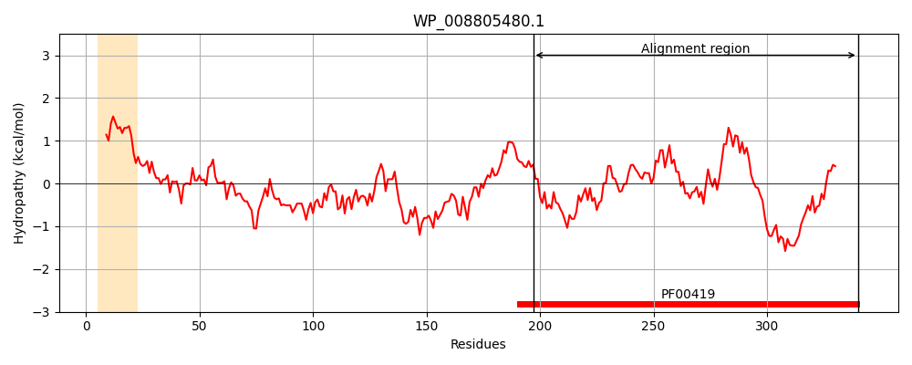
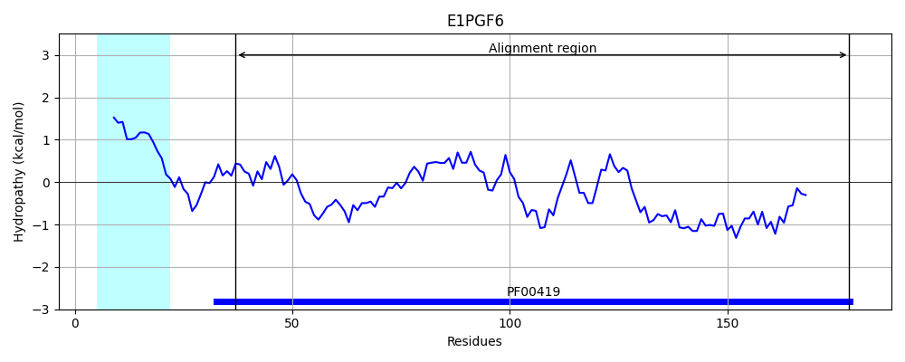
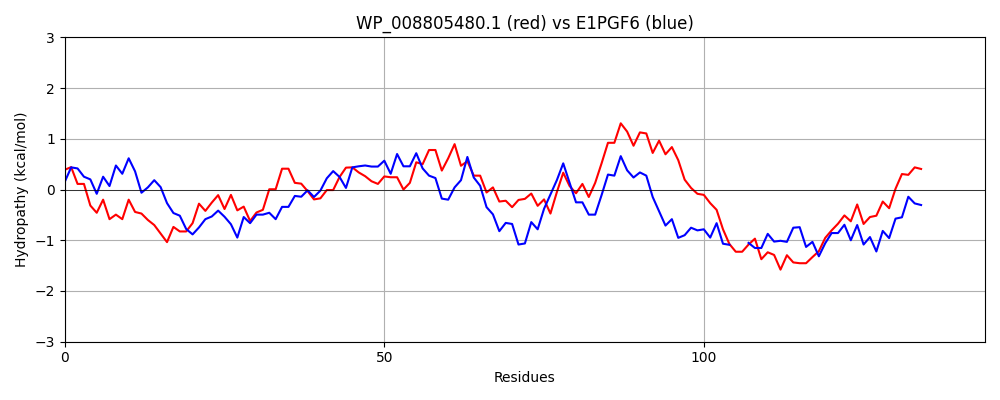

Hit Accession: E1PGF6
Hit TCID: 1.C.80.1.2
Hit Description: gnl|BL_ORD_ID|3594 gnl|TC-DB|E1PGF6|1.C.80.1.2 Minor F1C fimbrial subunit SfaD OS=Escherichia coli OR:K5:H- (strain ABU 83972) GN=sfaD PE=4 SV=1
Mach Len: 144
e:0.000000
Query TMS Count : 1
Hit TMS Count: 1
TMS-Overlap Score: 0.000000
Predicted Substrates:CHEBI:24870;ion, CHEBI:25367;molecule
BLAST Alignment:
| Protein Hydropathy Plots: | |
|---|---|
|  |  |
Pairwise Alignment-Hydropathy Plot: | |
|  | |